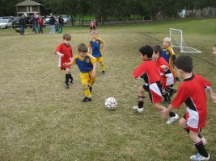
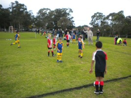
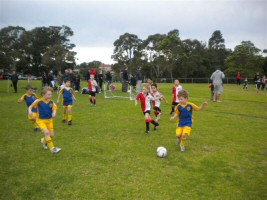
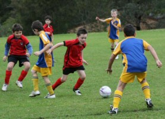
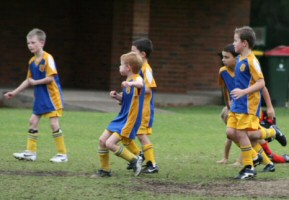
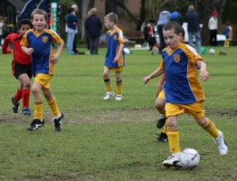
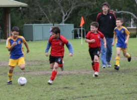

| Match Report - 26 June 2010 |
|
|
|
|
|
|
|
|
|
|
After the lacklustre performance of the Socceroos at the World Cup, a larger than
usual crowd came seeking confidence that better results lay ahead. And they found
comfort in the emerging skills of the Under 6 White Ants as they took on the Ryde
Panthers. Great teamwork led to some 15 or so unanswered goals being scored by
our boys.
Maxwell and Toby each got a few goals, Ben got a nice one and Ryan and Oliver
were excellent in support. But it was Ashton who applied all of his energy and
skill to be rewarded with half of our points. Even more impressive was the way
he shared the success around with excellent passing to set up his team mates for
their own goals. Ashton was the deserving recipient of the Piston Cup this week.

There were also excellent off-field performances by the parents on canteen duty
and by our coach, Duncan. This week, I heard Duncan score a record three 'he's
so great with the kids' comments - often coming as he tried to even things up
with some coaching of the other team.
Well done, future Socceroos - don't forget the parents who supported you!

- Chris (Toby's Dad)
|
|
|
|
|
|

A better effort this week, but the White B's were always going to struggle with a
player down from the squad. Team management ruled out Joshua on the morning of the
match due to medical reasons, deciding he'd be better placed on the couch at home
with alternative teammates, blanket and Cartoon Network.
As for the play on the pitch, the focus again was attacking the ball and the
available team members performed admirably. Blake picked up the Player of the Week
award for the 2nd week in a row with his trademark defensive tackles denying the
opposition of what looked to be certain goals.
A good goal from attacking play by the ever reliable Christian, and some near
misses in front of goal by Idan and Alexis kept Putney on their toes, and Reilly
showed no fear cutting through much bigger opponents in one of many plays though
the middle.
The next win is not too far away.
- Will
|
|
|
|
|
|
We scored lots of goals. Fletcher did some really good kicks over the top of
their players. Fletcher took the ball from me.

- Kate Kennedy
|
|
|
|
|
|

After the previous week off due to a bye and training washed out, the u7's White B
team were excited about playing again. It was all action from the initial whistle
with both teams showing determination and desire to take control of the ball play.
5 minutes into the first half MCS scored a deserving goal and team spirits remained
high. Andy was coaching and umpiring this week and did a great job assisting both
teams with direction and kick in's.

Kevin was outstanding with his display of ball skills and this was highlighted
with a full field run skilfully breaking through the entire MCS team to score an
equalling goal which would have made the Socceroos proud! The teams were equally
matched and just before half time the great defence of the midfield and sweeper
were broken by MCS. Cameron was fast on his feet and made some great saves. Luca
was very strong in the midfield and attack and was unlucky to be just wide of the
goals a few times. Oliver was strong in the midfield and side kicks. Emily was
defending in the midfield well and had some nice attacking shots. Liam was strong
in the attack as always and was so unlucky to have a great goal stoped on the
line - literally on the line! Rishi made it to the game at half time and the team
were happy to see him. It didn't take long for Rishi to warm up on the cold
morning. A few minutes into the second half and Rishi scored a very convincing
goal, leading to a 2-all draw.
Liam is heading overseas for the next 4 weeks and we will miss him (and the
Eadies), have a great time and we look forward to seeing you at the catch up
games. The well deserving player of the match Luca, ran the entire game without
slowing for a second (including 15 minutes prior to game in his own warm up
session), Luca showed great skill and strength, he was able to read the play
extremely well. Luca was unlucky not to convert a goal and assisted his team
mates from start to finish.
- Sarah Robson
|
|
|
|
|
|


The boys were back at Fontenoy ready to take on the Redbacks.
The boys came out strong setting up the play which saw Luke A get the ball and
make a strong kick straight at goal and scoring in the opening minutes of the
game. At the end of the first half the Redbacks replied back with a goal of
their own.
As the match went on it became quite clear how well matched both the teams were,
with neither side willing to give ground.
Jay and Jarrod worked really hard in goal making some great saves against some
strong attacks. Kaiden, Blake and Nathaniel showed impressive defense skills

and at the end of the day that was what this game ended up being all about.
Nathaniel was also a real trooper he took a massive hit but came back on the
field and the saw the game out.

Luke M and Aden tried their best with continued attempts at breaking through
the Redbacks defense and kicking that ball at goal and they came so very close.
It was a tightly contested game but the boys held their ground.
Final score was a 1 - 1 draw.
Player of the match went to Aden who couldn't have been more proud.
Thanks boys for putting on a great game and showing everyone what determination
and sportsmanship you all have.
Looking forward to next Saturday?
- Shareen (Aden's Mum)
|
|
|
|
|
|
This week we travelled to Bremner Park to take on the Putney Rangers. It was an
overcast day and the pitch was heavy and damp, but it didn't dampen the enthusiasm
of the team. Within 1 minute of the kick-off we were down 0-1, with an early goal
to Putney. Our team was not put off by this early set-back, and played a really
strong first half, having more than their share of possession and field position.
It was a tough, physical game, with lots of strong tackles, and at times arms and
legs flying all over the place. We played really well as a team, with the backs
snuffing out any Putney attack before they had a chance to score. The mid-fielders
covered a lot of ground, and did a good job in supplying plenty of ball to the
forwards. After some great lead up work by the mid-fielders, Tom scored a sharp(e)
goal to levels things at 1-1 mid-way through the first half. The score remained
1-1 until half-time, and the team went to the break buoyed by their strong first
half performance.
The second half continued on from where the first half had finished, with plenty
of strong attacking runs and solid defence from both teams. The ball flowed from
one end of the field to the other. The scores stayed level until about half way
through the second half, when Putney scored their second goal. We kept on trying,
but there were two more goals to Putney late in the game, the last one only seconds
before the final whistle. The 1-4 final score didn't reflect how close it had been,
or the great effort our team put in throughout the game.
Lawrence, Tom, Jack and Lachlan worked tirelessly up front, with a number of strong
runs threatening the Putney defence. Andrhea, Sam, Pete and Harrison played solidly
in mid-field, making some good breaks, and ensuring plenty of ball for the forwards.
Matthew was busy all day with some good runs and clearing kicks. Jordan, Ben and
Alvin put in a big effort at the back to shut down the advances from the Putney
forwards. Nicholas did a great job in goals and made some good saves. Saxon couldn't
play due to injury, but gave plenty of support from the sideline.
Great effort guys - you should be proud of yourselves.
- Matt Jones
|
|
|
|
|
|
A real season highlight occurred last weekend when the Under 12 6s secured their
first consecutive wins for the season with an outstanding 2 - 0 win against
Kenthurst, with whom North Ryde were tied equal 4th on the table going into
the match. The win has cemented the team at 4th on the ladder which in itself
is an outstanding achievement for the team in its first season together.
The coaches, managers and parents were truly proud of the boys efforts on the
weekend given that...
- Kenthurst had beaten us in the first round
- North Ryde played with the bare 11, with no subs
-
The boys truly played as a team, supporting each other and running and
passing till the final whistle
- It was an 8.15am kick-off and no-one dozed off!
The continuing improvement of individual players such as Andrew, Beezhad and
Connor cannot be understated together with the other notable highlights being
Kevin and Alex's goals, which were their first for the season. This generated
unprecedented excitement on the sidelines and made for a memorable day.
Well done boys.
- David Hoy
|